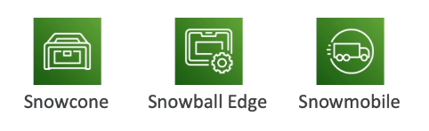
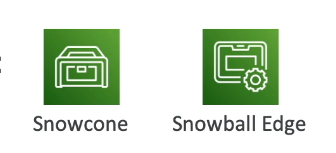
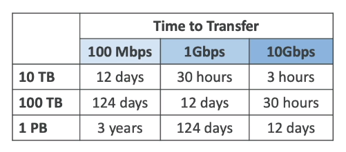
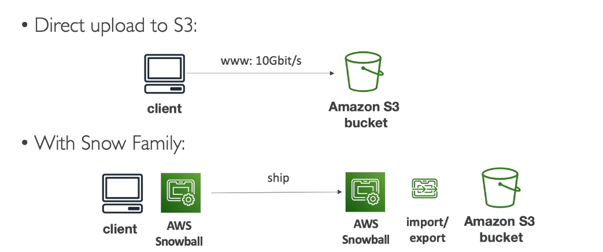
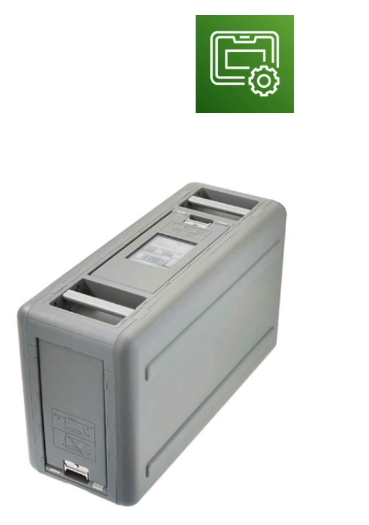
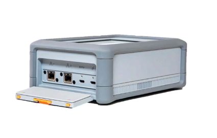
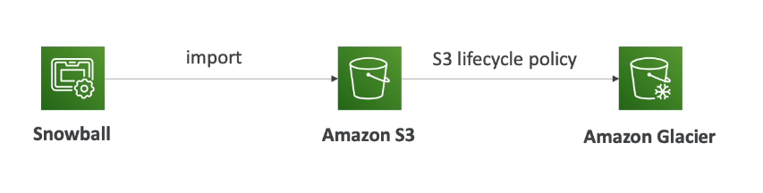

🌿 What?
-
Là dịch vụ có tÃnh bảo máºt cao, cung cấp các thiết bị di chuyển được dùng cho mục Ä‘Ãch:
- Thu tháºp và xá» lý dữ liệu trên các edge
- Migrate data trong hoặc ngoà i AWS
-
Data migration:
- Snowcone
- Snowball Edge
- Snowmobile 
-
Edge computing:
- Snowcone
- Snowball Edge 
🌿 Why?
-
Lý do phải sá» dụng Snow Family để chuyển dữ liệu vì thá»i gian truyá»n tải dữ liệu trên mạng là rất lâu. 
-
ThỠthách đưa ra cần giải quyết các vấn đỠsau:
- Kết nối bị giới hạn.
- Băng thông cũng bị giới hạn.
- Chi phà di chuyển cao.
- Băng thông bị chia năm sẻ bảy(dùng chung -> không thể sỠdụng tối đa được)
- Kết nối ổn định(mạng public thì hay cháºp chá»n)
-
Snow Family sẽ giải quyết các vấn Ä‘á» trên bằng cách gá»i thiết bị offline đến cho bn(qua bÆ°u điện chẳng hạn), mất tầm khoảng một tuần, bạn nháºn được và chỉ việc tải dữ liệu từ thiết bị offline lên AWS thôi. 
🌿 Types
🃠Snowball Edge

- Giải pháp váºt lý váºn chuyển dữ liệu: move TBs hoặc PBs dữ liệu và o hoặc ra từ AWS, thay thế cho việc truyá»n tải dữ liệu qua mạng(và việc trả phà cho mạng)
- Trả tiá»n theo từng job
- Cung cấp block storage và Amazon S3-compatible object storage
- Snowball Edge Storage Optimized
- Dung lượng HDD là 80TB
- Snowball Edge Compute Optimized
- Dung lượng HDD là 42TB
- Use Cases: migrate cho dữ liệu lớn trên cloud, phục hồi sau thảm há»a, …
🃠AWS Snowcone & Snowcone SSD

- Nhá» gá»n, có thể thực hiện tÃnh toán ở bất cứ đâu, bá»n bỉ và bảo máºt, phù hợp với những môi trường cần dữ liệu không lớn.
- Nặng khoảng 2.1kg
- Snowcone - 8 TB HDD
- Snowcone SSD - 14 TB SSD
- SỠdụng khi Snowball không phù hợp(và dụ như cần tối ưu cân nặng để mang lên máy bay chẳng hạn)
- Phải cung cấp sạc hoặc pin để nó hoạt động
- Có thể gá»i vá» AWS offline hoặc connect nó với internet và sá» dụng AWS DataSync để gá»i dữ liệu.
🃠AWS Snowmobile
- Là một cái xe tải chở các thiết bị lưu trữ
- Dùng để váºn chuyển dữ liệu lên đến exabyte(1EB = 1000PB = 1000000TBs)
- Mỗi một Snowmobile(1 xe tải) có dung lượng là 100PB
- Bảo máºt cao, nhiệt được điá»u kiểm soát, GPS, video giáo sát 24/7
- Tối hơn Snowball nếu chúng ta muốn váºn chuyển nhiá»u hơn 10PB dữ liệu.
🌿 AWS OpsHub
- Trước đây để sỠdụng các thiết bị Snow Familly, bạn cần phải có 1 CLI tool
- Giá» chúng ta có thể sá» dụng AWS OpsHub(một phần má»m có thể cà i và o máy tÃnh) để quản lý các thiết bị Snow Family.
🌿 Snowball into Glacier
- Không thể chuyển dữ liệu trực tiếp từ Snowball và o Glacier được.
- Chúng ta phải sá» dụng Amazon S3 để nháºn dữ liệu từ Snowball, sau đó kết hợp với S3 lifecycle police để chuyển dữ liệu và o Amazon Glacier. 